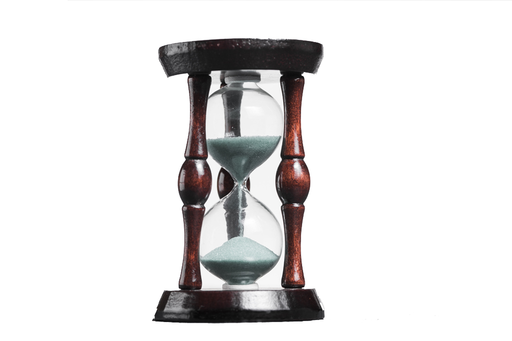

Sep 16, 2019

Last Mile deliveries is a term used for supply chain management planning and transportation planning to describe movements of goods and people from one location to another, (generally, transportation hub to final destination). Last mile delivery is an increasingly studied field das a number of business to consumers grow especially form e-commerce companies in freight transportation and ride sharing companies.
Rise of trends like e-commerce, crowdsourcing app and same day delivery fulfilment has upended last mile delivery segment.
"Last mile" was adopted from the telecommunications industry which faced difficulty connecting individual homes to the main telecommunications network. Similarly, in supply chain management last mile describes the difficulty in transporting people and packages from hubs to final destinations. Transporting goods via freight rail networks and container ships is often the most efficient and cost-effective manner of shipping. However, when goods arrive at a high-capacity freight station or port, they must then be transported to their final destination. A related last mile problem is the transportation of goods to areas in need of humanitarian relief. Aid supplies are sometimes able to reach a central transportation hub in an affected area but cannot be distributed due to damage caused by a natural disaster or a lack of infrastructure.
Here are some of the rising trends in last mile delivery to help things out:
1. Use of Radio Frequency Identification (RFID).
2. In-house delivery services.
3. 3PL services.
4. Warehouses in major cities.
5. Improved tracking system.
6. Self-driving delivery vehicles.
The goal of last mile delivery is to deliver items to the customer as quickly as possible while minimizing company costs.
written by :